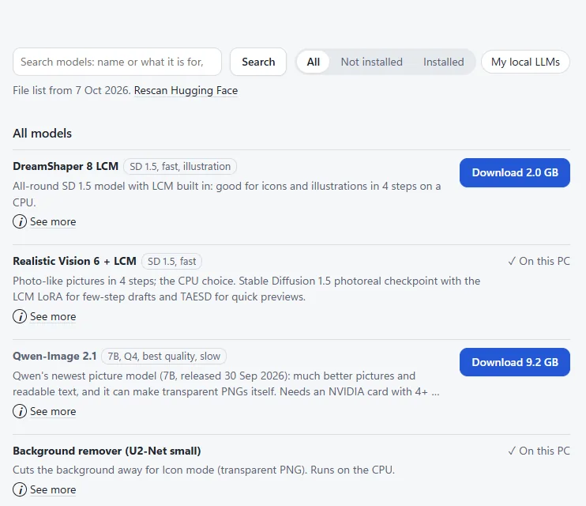

Installing models
The Models page, what fits this PC, the model files you have and the runners.
A model is the software your staff think with: a chat model writes, a picture model draws. Open Settings, Models (the Models page). Search by name or by what it is for, narrow it with the filters on the left (size in billions of parameters, B, or in GB, the kinds of model, and Mixture-of-experts for mixtures of experts), and each row shows its size before you press anything. Size and A to Z, right of the list's heading, order it (press again for the other way round). Download takes the recommended size in one press and turns into the download's progress; a model you have says ✓ On this PC. Chat models come from Hugging Face; picture models, helpers (the background remover) and the model runners come from TOMLIN's own list.

What fits this PC
bigger models answer and draw better but need more memory and time. What can my PC run? Work it out lists each model with whether it fits and about how fast it runs. Hire staff shows the memory each model needs, too. Times below were measured on an Intel HD 520 laptop and a 32 GB CPU-only desktop. A token is about three quarters of a word.
Model files you already have
chat models are .gguf files: put them in TOMLIN\models\chat in your user folder (Models lists what is found).
The runners
The runners are the small programs that load a model and make it write (chat) or draw (pictures); a model on its own is only a file. The ones for the processor and for any graphics chip (Vulkan) come in the zip, nothing to install; the ones for an NVIDIA card (CUDA) are under Model runners on the Models page. There are two: CUDA 12.4, for NVIDIA cards from the GTX 750 on, and CUDA 13.4, with code made for RTX 50 cards (for the RTX 20 and GTX 16 series and newer). TOMLIN starts models on the one that suits the card; the speed finder tries the other too, and a CUDA start that could not use the card is said and moves to Vulkan.
Next: which model to pick, and copying models between PCs.